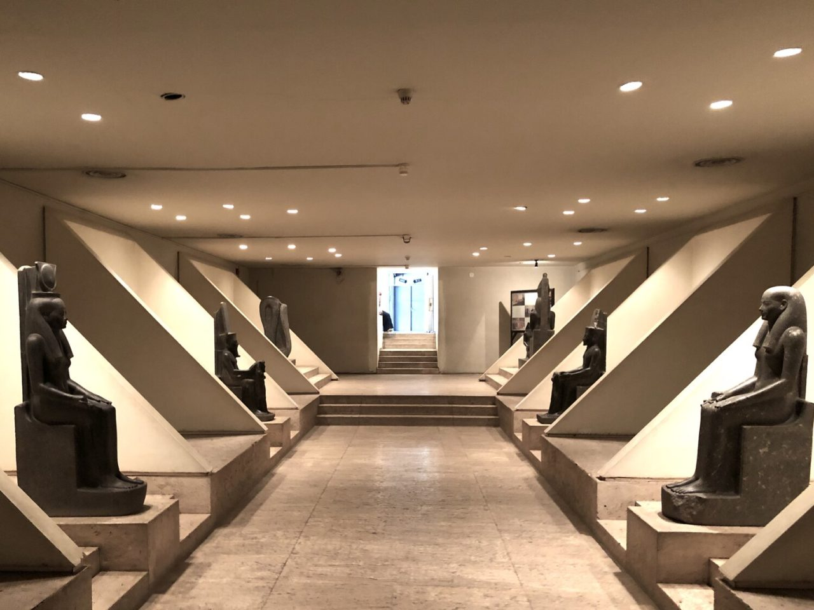

Luxor Museum was inaugurated in 1975 and boasts an impressive collection of high-quality artworks dating back from the Predynastic Period to the Islamic era. The modern building offers ample space for visitors to move around comfortably and admire the beautifully displayed objects and sculptures. It's an ideal destination to spend a morning in Luxor.
One of the most fascinating exhibits on display is the Wall of Akhenaten. It's a series of small sandstone blocks named talatat (threes) by workmen, probably because their height and length are about three hand lengths. The Wall of Akhenaten came from Amenhotep IV's contribution at Karnak before he changed his name to Akhenaten and left Thebes for Tell Al Amarna. In the late 1960s, 40,000 stones meant to fill in Karnak's ninth pylon were discovered and largely reconstructed here, after his edifice was dismantled. The images on the wall depicting Akhenaten, his wife Nefertiti, and temple life are a unique example of Aten temple decoration. You'll also be able to see Tutankhamun's burial treasures, such as shabti (servant) figurines, model boats, sandals, arrows, and a sequence of gilded bronze rosettes from his funeral pall.
Address: Luxor Governorate, Egypt
Timings: 8:00 AM - 6:00 PM
Nearby Hotels: Available in Luxor City, including luxury hotels along the Nile.
Nearby Places to Visit: Karnak Temple, Valley of the Kings, Valley of the Queens, Colossi of Memnon